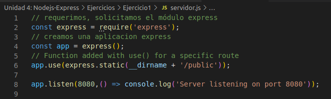

Express.js, a veces también llamado «Express», es un framework de backend Node.js minimalista, rápido y similar a Sinatra, que proporciona características y herramientas robustas para desarrollar aplicaciones de backend escalables. Te ofrece el sistema de enrutamiento y características simplificadas para ampliar el framework con componentes y partes más potentes en función de los casos de uso de tu aplicación.
- Flexible y rápido
- Parte de la Stack MEAN
- Escalabilidad
- Compatible con el Motor V8 de Google
- Alto apoyo de la comunidad.
- Potente Sistema de Enrutamiento.
- Middleware.
Un servidor no es más que un programa que lo único que hace es estar a la espera de que
alguien deje información en un espacio específico y concreto de la memoria del ordenador,
un “puerto”, y cuando una “petición” entre por ese puerto, el programa servidor lanzará una
función que se encargará de hacer lo que sea que hayamos previsto para ella.
Para poner a funcionar el servidor (“levantar” el servidor para ponerlo a “escuchar”) después
de haber instalado las dependencias con npm install arrancamos el documento donde
tenemos nuestro código de express: node servidor.js
Cuando se acceda al directorio raiz “/” se ejecutará una cosa distinta a la ruta “/ejemplojson”
y de igual manera si queremos ejecutar un archivo.html estático e interpretar directamente
“/registro.html” haciendo las funciones de servidor web.
Express es capaz de leer e interpretar archivos estáticos como, por ejemplo, imágenes,
archivos CSS y archivos JavaScript, a través de la función de middleware express.static.
En este primer proyecto crearemos un servidor que al inicialiarlo en el puerto 8080 nos enviará a un index.html que se localiza en la carpeta public de nuestro proyecto donde encontraremos el index y el css

Las dos primeras líneas require()(importar) el módulo express y crear una aplicación Express .
Este objeto, que tradicionalmente se denomina app, tiene métodos para enrutar solicitudes HTTP,
configurar middleware, representar vistas HTML, registrar un motor de plantilla y modificar la
configuración de la aplicación que controla cómo se comporta la aplicación (por ejemplo,
el modo de entorno, si las definiciones de ruta distinguen entre mayúsculas y minúsculas, etc.)
Luego podría llamar a use() en el objeto de la aplicación Express para agregar el middleware a la pila:
Para servir archivos estáticos, como imágenes, archivos CSS y archivos JavaScript, use la función de middleware incorporada express.static en Express.
El argumento raíz especifica el directorio raíz desde el cual servir información de activos estáticos en el argumento de la opción
Una vez nos metemos en localhost:8080 obtenemos

Express.js se utiliza para una amplia gama de cosas en el ecosistema JavaScript/Node.js — puedes desarrollar aplicaciones, endpoints de API, sistemas de enrutamiento y frameworks con él.
- Aplicaciones de una Sola Página
- Herramientas de Colaboración en Tiempo Real
- Aplicaciones de Streaming
- Aplicaciones Fintech
- Ebay